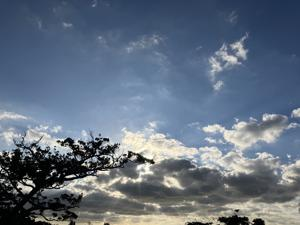
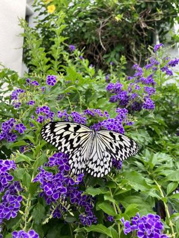
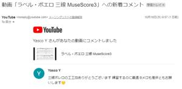

うるがいの話 ある日
最新: ボレロのＢメロとは【うるがいの話 ある日】とは 一日だけのプログです
『うるがいの話』の最新一日だけのプログで、通信料が少なく経済的だ。カニの画像をクリックすると全ての日付が載る『うるがいの話』サイトを表示します
|
|
【うるがいの話】 うるがい(ｳﾙｶﾞｲ urugai)とは、『もずくがに』の名前でとても大きくなります。 |
|---|---|
|
|
【カミマヤーの話】 猫のことを方言でマヤーといいます。カミマヤー（kamimayaa）とは、神の猫のことです。 |
|
【たながぁの音楽】 たながぁ（ﾀﾅｶﾞｰ tanagaa）とは手長えびのことで、何種類かあり大きいのは車 エビぐらいになります。 |

|
【ぶながぁの話】 ぶながぁ(ﾌﾞﾅｶﾞｰ bunagaa)とは、赤い髪の毛、赤い身体、そして身長は１ｍ２０ｃｍ ぐらい、川の蟹を食べているの目撃された。場所は沖縄県国頭郡大宜味村のと ある村僕の隣近所に住んでいる爺さんから、聞いた話です。 |
|
|
【ギーマの話】 ギーマ(giima)とは、山原の里山に咲くスズランに似た、 花を付けます。実は食べられます、 気が付くと口の周りが紫になっています。 |
2023年10月19日 (木）ボレロのＢメロとは
15:08
 
三線ボレロの工工四ありがとうございます
練習するのに最適Ｂメロも是非ともお願いします

え！、Ｂメロって何？、さらに最適とは、そもそも誰かさんのユーチューブ動
画を参考にしただけなのに。真面目な私は、期待に答えようとネットをさまよ
うのである。
夕方、隣さんの奥さんがダンキンドーナッツ（１０個入り）を持って、工事の
お礼をした。そこへ、紫のレンギョウの花に、大きなオオマダラの蝶々がヒラ
ヒラと飛び蜜を吸っている。台風のあと、きれに剪定した木がこんなに復活し
ている、蝶々も沢山いると話すと『これって大きな毛虫だよね！、気持ち悪い
』と言われた。タラリ、こんな人もいるんだと思った。
１５時０３分 ビットコインの総資産 ￥１２、２９１（↓１０６）